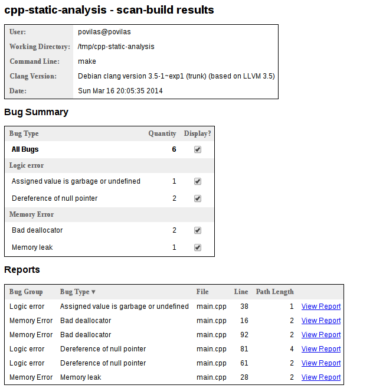

Static C++ code analysis
Static code analysis
Static code analysis is the process of detecting errors and defects in software's source code. Static analysis can be viewed as an automated code review process.
Tools
scan-build
Let's see how to analyze c++ code with scan-build. Again I will be using Debian 7 and cmake to build my c++ programs.
Get the clang package
LLVM provides scan-build in a debian package [1].
Add the apt key of LLVM repository
Add the LLVM repos to apt sources directory
$ sudo echo "deb http://llvm.org/apt/wheezy/ llvm-toolchain-wheezy main" > /etc/apt/sources.list.d/llvm-clang.list $ sudo echo "deb-src http://llvm.org/apt/wheezy/ llvm-toolchain-wheezy main" >> /etc/apt/sources.list.d/llvm-clang.list
Get clang package
When this article was written latest clang version was clang-3.5. This package contains scan-build script. Now we are ready to analyze our sources.
Code analysis
Code analysis is easy with scan-build:
To demonstrate better of what can static analysis do I've set up a git repo with c++ project that has some sample bugs that scan-build might catch [4].
Let's download the sample:
Now run the scan-build analyzer:
This should yield that some bugs were found:
scan-build: 6 bugs found. scan-build: Run 'scan-view /tmp/scan-build-2014-03-16-200244-31706-1' to examine bug reports.
To see the report in HTML format enter:
You should see something like this:
References
Comments